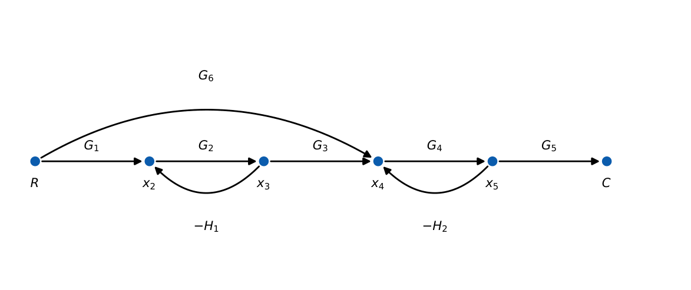

Signal Flow Graphs
In this chapter
Mason’s gain formula appears almost every year: identify forward paths, individual loops, non-touching loops and the cofactors \(\Delta_k\). Speed and care in listing loops are the whole game.
6.1 Core concept
A signal flow graph (SFG) is a directed graph: nodes are variables, branches are directed transmittances. The value of a node is the sum of all incoming branch signals; outgoing branches carry the node value unchanged. Terms:
- Input (source) node: only outgoing branches. Output (sink) node: only incoming.
- Forward path: path from input to output crossing each node once. Its gain \(P_k\).
- Loop: closed path returning to the starting node, crossing each node once. Gain \(L_i\).
- Non-touching loops: loops sharing no node.
6.2 Mason’s gain formula
\(T=\dfrac{C}{R}=\dfrac{1}{\Delta}\sum_{k}P_k\Delta_k\)
\(\Delta=1-\sum L_i+\sum L_iL_j-\sum L_iL_jL_k+\cdots\) (products over mutually non-touching sets)
\(\Delta_k=\Delta\) evaluated with all loops touching the \(k\)-th forward path removed.
The formula is the systematic solution of the linear equations of the graph (Cramer’s rule); for a single loop it reduces to \(\dfrac{G}{1+GH}\) (loop gain \(-GH\)).
6.3 Procedure
- Write all forward paths and their gains \(P_k\).
- List every individual loop (check feedback branches carefully) with gains \(L_i\).
- Find all pairs, triples,… of non-touching loops.
- Compute \(\Delta\) and each \(\Delta_k\) (remove loops touching path \(k\)).
- Substitute.
6.4 Solved examples

Forward paths: \(P_1=G_1G_2G_3G_4G_5\) (all nodes), \(P_2=G_6G_4G_5\) (skips \(x_2,x_3\)).
Loops: \(L_1=-G_2H_1\) (nodes \(x_2,x_3\)), \(L_2=-G_4H_2\) (nodes \(x_4,x_5\)). They share no node, so \(L_1L_2=G_2G_4H_1H_2\).
\(\Delta=1+G_2H_1+G_4H_2+G_2G_4H_1H_2=(1+G_2H_1)(1+G_4H_2)\).
\(P_1\) touches both loops: \(\Delta_1=1\). \(P_2\) touches \(L_2\) only (through \(x_4,x_5\)): \(\Delta_2=1-L_1=1+G_2H_1\).
\[
T=\frac{G_1G_2G_3G_4G_5+G_6G_4G_5(1+G_2H_1)}{(1+G_2H_1)(1+G_4H_2)}.
\]
Check with every gain \(=1\): \(\Delta=2\times2=4\), numerator \(1+2=3\), so \(T=0.75\).
Forward \(G\), feedback \(-H\): \(P=G\), \(L=-GH\), \(\Delta=1+GH\), \(\Delta_1=1\), \(T=\dfrac{G}{1+GH}\).
Loops \(L_1=-0.2\), \(L_2=-0.5\) non-touching, and \(L_3=-0.1\) touching both: \(\Delta=1-(-0.2-0.5-0.1)+(-0.2)(-0.5)=1+0.8+0.1=1.9\).
For the nested-loop diagram of Chapter 5 (\(G_1,G_2,G_3\) in series, \(H_1\) around \(G_2\), \(H_2\) around all): \(P=G_1G_2G_3\); \(L_1=-G_2H_1\), \(L_2=-G_1G_2G_3H_2\) (touching); \(\Delta=1+G_2H_1+G_1G_2G_3H_2\), \(\Delta_1=1\): identical to block-diagram reduction.
6.5 Multiple inputs and outputs
For several inputs use superposition: set all other inputs to zero and apply Mason’s formula with the chosen node as input. For several outputs the same \(\Delta\) (a property of the graph) is used with different \(P_k,\Delta_k\).
6.6 SFG vs block diagram
SFG needs no reduction sequence and handles interlaced loops directly; block diagrams show physical components. Both give the same \(T\).
Loops before paths. Draw the loop list first and mark node sets; non-touching checks then become set-disjointness tests. In \(\Delta_k\), drop every loop that shares any node with path \(k\). If every loop touches every path, \(T=\dfrac{\sum P_k}{\Delta}\).
(i) Missing a loop that goes through a long feedback branch. (ii) Treating loops that share only a branch but not a node (impossible) versus sharing a node (touching). (iii) Sign errors: \(L_i\) carries the sign of its branch gains; negative feedback branches contribute negative loops. (iv) Forgetting cross-terms \(L_iL_j\) for non-touching pairs. (v) Including a loop in \(\Delta_k\) that touches \(P_k\).
Q1. For a graph with a single forward path \(P\) and a single loop of gain \(L\) touching it, \(T=\) (A) \(\dfrac{P}{1-L}\) (B) \(\dfrac{P}{1+L}\) (C) \(P(1-L)\) (D) \(\dfrac{P}{L}\).
Q2. Two individual loops \(L_1,L_2\) that do not touch: \(\Delta=\) (A) \(1-L_1-L_2\) (B) \(1-L_1-L_2+L_1L_2\) (C) \(1+L_1+L_2\) (D) \(1-L_1L_2\).
Q3. A loop that touches the \(k\)-th forward path is (A) retained in \(\Delta_k\) (B) removed in \(\Delta_k\) (C) doubled (D) ignored in \(\Delta\).
Answers: Q1 (A). Q2 (B). Q3 (B).
Q4. A graph has one forward path \(P=G_1G_2G_3\) and loops \(L_1=-G_2H_1\), \(L_2=-G_3H_2\) (touching, sharing node), \(L_3=-G_1G_2G_3H_3\). \(T=\) (A) \(\dfrac{G_1G_2G_3}{1+G_2H_1+G_3H_2+G_1G_2G_3H_3}\) (B) with \(+G_2G_3H_1H_2\) added to \(\Delta\) (C) \(\dfrac{P}{1-L_1-L_2-L_3}\) with all positive (D) \(\dfrac{P}{1+\sum L}\).
Q5. \(P_1=2\), \(P_2=3\), \(\Delta=4\), \(\Delta_1=1\), \(\Delta_2=0.5\). \(T=\) (A) \(0.875\) (B) \(1.25\) (C) \(0.5\) (D) \(2\).
Answers: Q4 (A): all loops touch. Q5 (A): \((2+1.5)/4=0.875\).
Q6. In the worked example set \(G_1..G_6=2\), \(H_1=H_2=0.5\). \(T=\) (two decimals).
Q7. Loops: \(L_1=-1\), \(L_2=-2\) (non-touching with \(L_1\)). \(\Delta=\) .
Answers: Q6: \(G_2H_1=1\), \(G_4H_2=1\), \((1+1)(1+1)=4\); \(P_1=2^5=32\), \(P_2=2^3=8\), \(\Delta_2=2\); \(T=(32+16)/4=12.00\). Q7: \(1+1+2+(-1)(-2)=6\).
Q8. Which are true? (A) \(\Delta\) depends only on the loops (B) \(\Delta_k\) depends on path \(k\) (C) \(P_k\) depends on loops (D) non-touching loops share no node.
Answers: Q8: (A), (B), (D).
Graph: \(R\xrightarrow{1}x_1\xrightarrow{a}x_2\xrightarrow{b}x_3\xrightarrow{1}C\) with feedback \(x_2\to x_1\) gain \(-c\) and \(x_3\to x_2\) gain \(-d\). Loop \(x_1\to x_2\to x_1\) has gain \(a(-c)=-ac\); loop \(x_2\to x_3\to x_2\) has gain \(b(-d)=-bd\); they share \(x_2\), so they touch (and both touch the path). \(T=\dfrac{ab}{1+ac+bd}\).
T1. State Mason’s formula and the meaning of each symbol.
T2. For a graph with two forward paths, both touching the only loop \(L=-0.5\), \(P_1=1\), \(P_2=2\), find \(T\).
Answers: T1: see box. T2: \(\Delta=1.5\), \(T=(1+2)/1.5=2\).
- \(T=\sum P_k\Delta_k/\Delta\); \(\Delta=1-\sum L+\sum LL-\cdots\) (non-touching sets).
- \(\Delta_k\): remove loops touching path \(k\).
- Negative feedback loop has negative gain; single loop \(\Rightarrow\) \(G/(1+GH)\).
- Multiple inputs: superposition. \(\Delta\) is common to all input–output pairs.